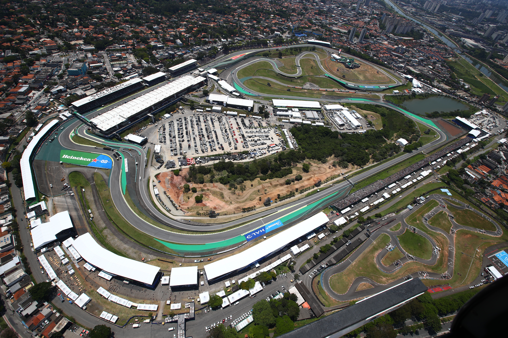
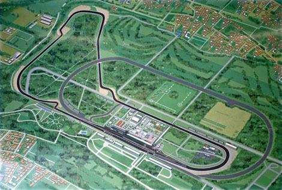
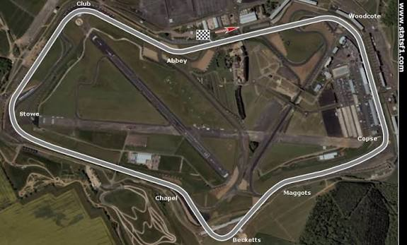
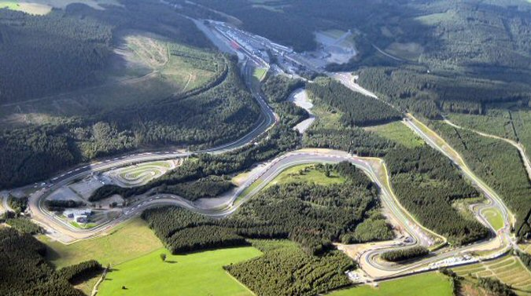
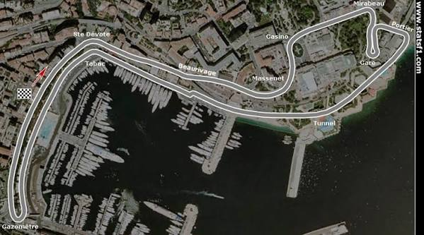
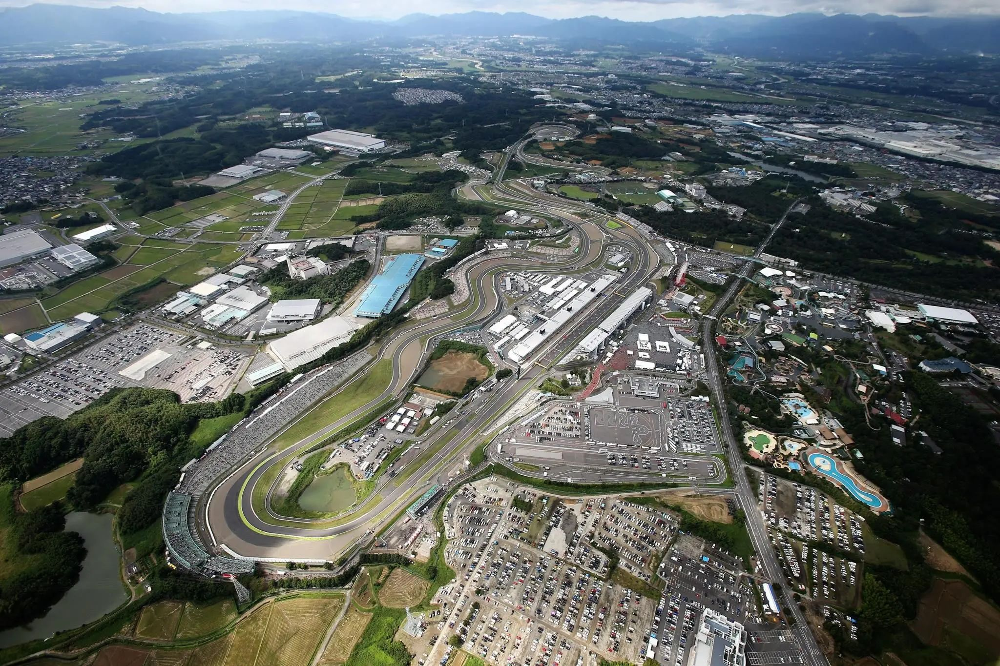

O que são os circuitos de Fórmula 1?
Os circuitos de Fórmula 1 são as pistas onde acontecem os Grandes Prêmios. Cada circuito possui características diferentes, como curvas rápidas, curvas lentas, longas retas, diferentes níveis de frenagem e mudanças de altitude.
Existem circuitos permanentes, construídos especificamente para competições automobilísticas, e circuitos de rua, montados em vias públicas de cidades.
Tipos de circuitos
| Tipo | Características |
|---|---|
| Circuito permanente | Pista construída especificamente para corridas, com estrutura própria para o automobilismo. |
| Circuito de rua | Utiliza ruas e avenidas de uma cidade e costuma possuir pouco espaço para erros. |
| Circuito de alta velocidade | Possui longas retas e curvas que permitem velocidades elevadas. |
| Circuito técnico | Possui muitas curvas e exige precisão, concentração e bom controle do carro. |
Autódromo de Interlagos
O Autódromo José Carlos Pace, conhecido como Interlagos, está localizado em São Paulo, no Brasil. É um dos circuitos mais tradicionais do calendário da Fórmula 1.
O circuito é conhecido pelas mudanças de elevação, curvas desafiadoras e pela famosa reta dos boxes.

Monza
O Autodromo Nazionale Monza está localizado na Itália e é conhecido por suas longas retas e altas velocidades.
O circuito possui uma das maiores velocidades médias do calendário e exige eficiência aerodinâmica e bom desempenho nas retas.

Silverstone
O Circuito de Silverstone está localizado na Inglaterra e é uma das pistas mais tradicionais do automobilismo mundial.
A pista é conhecida por suas curvas rápidas e por exigir bastante dos carros e dos pilotos.

Spa-Francorchamps
O Circuito de Spa-Francorchamps está localizado na Bélgica. É conhecido por seu traçado longo, suas curvas rápidas e pelas mudanças de altitude.
Uma das partes mais famosas do circuito é a sequência Eau Rouge e Raidillon.

Monaco
O Grande Prêmio de Mônaco é realizado nas ruas de Monte Carlo. É um dos circuitos mais famosos da Fórmula 1.
A pista possui ruas estreitas, muitas curvas e pouca área de escape. Por isso, a precisão dos pilotos é fundamental.

Suzuka
O Circuito de Suzuka está localizado no Japão. Seu traçado é conhecido por possuir curvas rápidas e mudanças de direção.
A pista exige equilíbrio do carro, precisão do piloto e boa eficiência aerodinâmica.

Características de um circuito
- Curvas rápidas
- Curvas lentas
- Retas
- Zonas de frenagem
- Boxes
- Área de largada
- Área de escape
- Zona de DRS